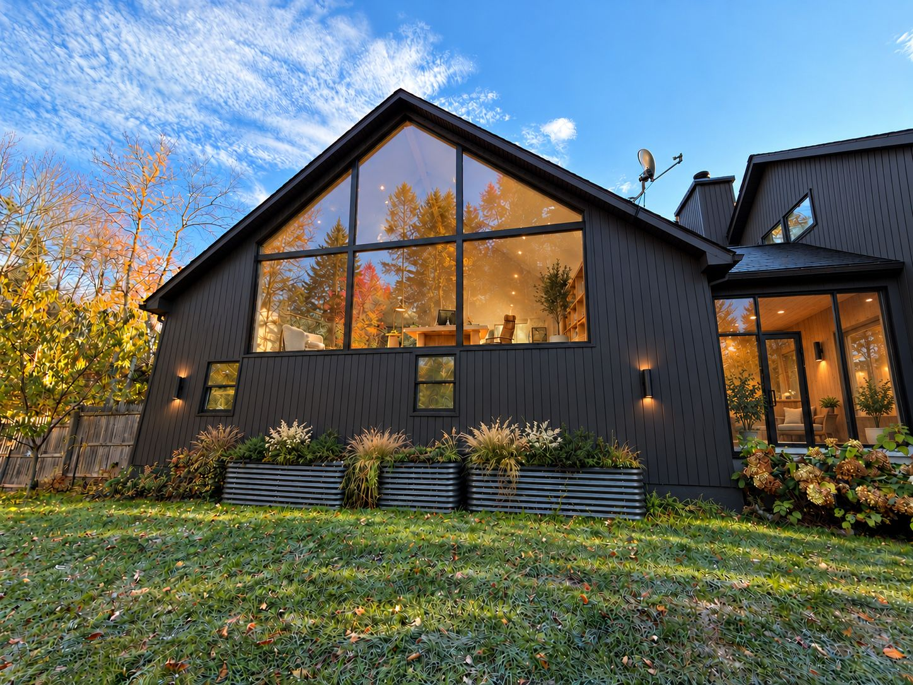

A working record of how this house on 5.7 wooded acres in the Catskills should evolve — the land, where it sits, what stands today, and the renders that point to what it becomes.

A house set back from Perry Road in a clearing, ringed by mixed hardwood and conifer forest. The rear lawn steps down in terraces held by dry-stone walls.
Two dormers (9'-7" wide) on one long side, a window in each gable end, and the stair arriving at the centre. Roughly 19' of floor between the knee walls.
Public-record figures via Redfin and Compass. Trulia shows the lot as 6.34 ac — a discrepancy to resolve with the survey before any site work is drawn.
Swan Lake is a hamlet in the Town of Bethel, Sullivan County — the western Catskills, in the Sullivan West school district. The parcel sits on Perry Road among lakes and second-growth forest.
What stands today: a 2005 Cape-style house in beige vinyl lap siding, an unfinished attic floor, a detached garage with an unfinished loft, and an unfinished lower level. Photographed by the owners in October 2026.
Each site photo set against the render shot from the same spot. Drag across an image — or use the arrow keys — to move from what stands today to what it becomes.
How we would like to see the house evolve — 37 renders, organised the way we think about the project: outside in, then the spaces.
The palette that repeats across every category of render. Specs and products to follow.